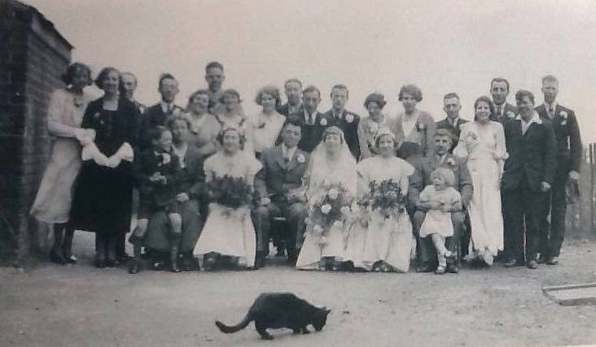
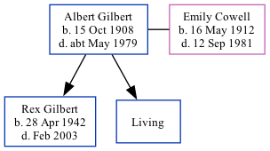

Albert Edward Gilbert 1908 - c1979
[ Home ] | [ Calendar ] | [ Surnames Index ] | [ Family History ]Albert Gilbert, the husband of Emily Edith Cowell (the aunt of Nigel Horne), was born in Thanet, Kent, England on Oct 15, 19081,2,3,4,5 and married Emily (with whom he had 2 children: Rex Albert Frederick and Philip Leonard, along with 1 surviving child) in Thanet around Feb 19356.
Throughout his life, he lived at 12 Hertford Road, Margate, Kent, England on Sep 29, 19391 and in 19657.
He died c. May 1979 in Margate3,4.
Children
- Rex Albert Frederick was born on Apr 28, 1942
Citations
- 1939 Register - Findmypast (was the head of the household)
- England & Wales births 1837-2006 - Findmypast
- England & Wales deaths 1837-2007 - Findmypast
- England & Wales, Death Index: 1984-2005 Online publication - Provo, UT, USA: The Generations Network, Inc., 2007.Original data - General Register Office. England and Wales Civil Registration Indexes. London, England: General Register Office. © Crown copyright. Published by permission of the Cont
- England & Wales, FreeBMD Birth Index, 1837-1915 Online publication - Provo, UT, USA: The Generations Network, Inc., 2006.Original data - General Register Office. England and Wales Civil Registration Indexes. London, England: General Register Office. © Crown copyright. Published by permission of the Cont
- England & Wales, Marriage Index: 1916-2005 Online publication - Provo, UT, USA: The Generations Network, Inc., 2009.Original data - General Register Office. England and Wales Civil Registration Indexes. London, England: General Register Office. © Crown copyright. Published by permission of the Cont
- 1965 Kelly's Thanet Directory
Media
Emily Cowell - Albert Gilbert - wedding

1965 Kelly's Thanet Directory

1939 Register Transcription - TNA-R39-1756-1756C-014-25
England & Wales marriages 1837-2008 - BMD/M/1935/1/AZ/000166/024
1939 Register - TNA/R39/1756/1756C/014/24
England & Wales marriages 1837-2008 - BMD/M/1935/1/AZ/000300/090
England & Wales births 1837-2006 - BMD/B/1908/4/AZ/000211/318
England & Wales deaths 1837-2007 - BMD/D/1979/2/AZ/000403/064
Family Tree
Generated by ged2site. Last updated on Nov 13, 2024